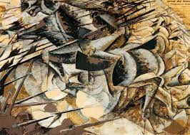
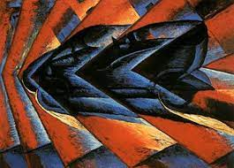

FUTURISMO
Criado no início de 1909, na cidade de Milão, na Itália, o futurismo repercutiu uma euforia com as descobertas as descobertas e invenções da Segunda Revolução Industrial, em andamento na Europa desde meados do século XIX, e cujos avanços tecnológicos refinaram-se ao longo das décadas. (BRANDIDO,S.D).
PRINCIPAIS CARACTERÍSTICAS DO FUTURISMO
Na pintura: uso de cores vibrantes e de contrastes; abstração e desmaterialização dos objetos (influência); sobreposição de imagens e traços em busca de representar a ideia de movimento e velocidade;
Contestação do sentimentalismo e consequente valorização do homem de ação;
Enaltecimento da audácia e da revolução;
Dinamicidade;
Na escrita: “liberdade para a palavra”; uso de onomatopeias, de versos livres, de frases fragmentadas ou em lugares, para passar a ideia de velocidade; vocabulário tecnológico; uso de exclamações e interjeições para expressar energia." Rejeição ao moralismo e ruptura com a tradição; (BRANDIDO,S.D).
PRINCIPAIS OBRAS:
Velocidade do Automóvel (1913), Giacomo Balla Esta tem a saudação a modernidade em meio ao automóvel, que é algo muito representado entre os futuristas. A imagem também é como se fosse várias fotografias em seguida, que foi um meio dos artistas encontraram para representar a velocidade. A obra é feita por formas geométricas que é muito comum dentre os artistas futuristas, e a forma do objeto representado é deformado, algo também muito comum quando dentre os futuristas.(WRITE,2014).
.jpeg)
Carga dos Lanceiros (1915), Umberto Boccioni Na obra o autor usa a sensação de velocidade abstrata para representar os aspectos futuristas, ao observar a obra tudo parece está se movendo sem rumo. Usar as formas geométricas para a representação do que se deseja também. E além de tudo isso, a obra representa o terror da guerra e da violência, como visto nos homens à cavalo e os traços fortes e marcantes, algo muito recorrente nas obras futuristas. (WRITE,2014).
Dinamismo de Automóvel (1913), Luigi Russolo Esta tem a clássica referência a máquina e uma forte presença da representatividade domovimento. Assim como muitas outras, ela não representa a realidade e sim a sensação do "dinamismo" do automóvel.(WRITE,2014).
REFERÊNCIAS
BRANDIDO, Luiza.“Expressionismo: principais obras e artistas”.Disponível em: Site. Acesso em 21 de Mai 2023.
Oshio, Raquel;“Expressionismo: o que é, características e principais artistas”.Disponivel em: Site. Acesso em 21 Mar 2023.
IMBROISI, Margaret; MARTINS, Simone;"Expressionismo: História das Artes." 2023. Disponível em: Site. Acesso em 21 Mar 2023.